传输层
传输层 v.s 应用层
传输层协议只工作在端系统，在端系统中，传输层协议将来自应用进程的报文移动到网络边缘(网络层)；网络路由器仅作用到数据段的网络层字段，不会检查封装在数据段中的传输层字段。 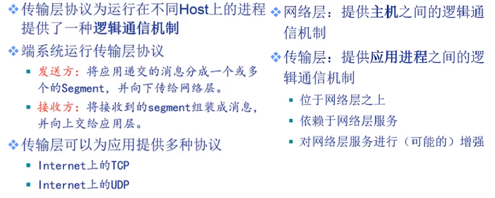
多路复用/分用
将主机间交付扩展到进程间交付。
将传输层报文段中的数据交付到正确的socket的工作称为多路分用；
在源主机中从不同socket收集数据块，并为每个数据块封装首部信息从而生成报文段，然后传递到网络层。
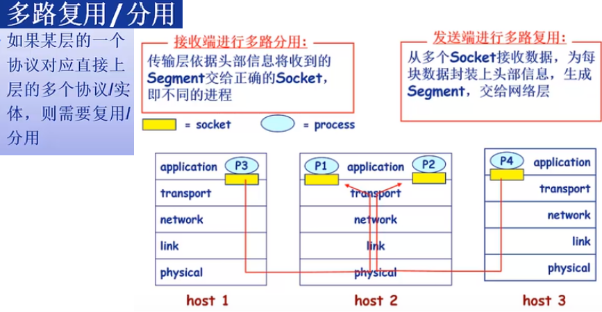
-
分用
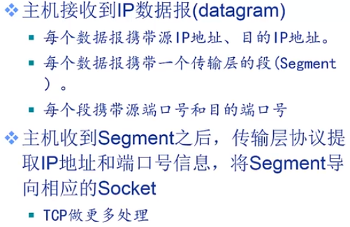 -
无连接分用
-
面向连接的分用
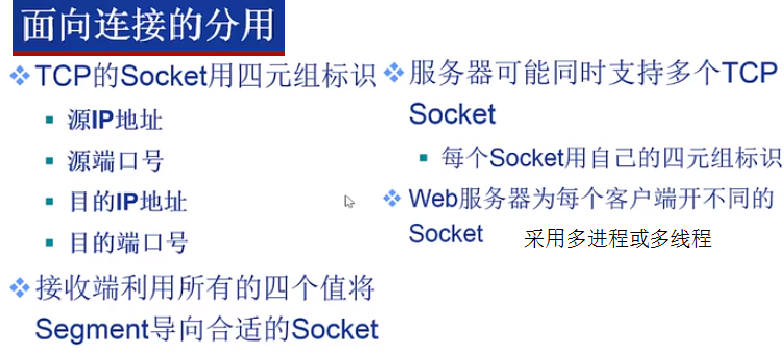
UDP
-
UDP协议
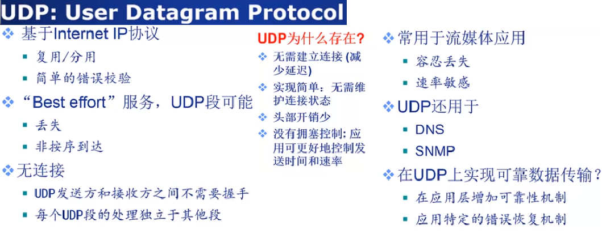 -
UDP报文格式
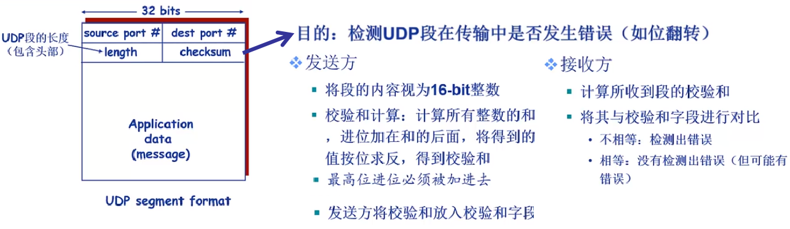
可靠数据传输(RDT)
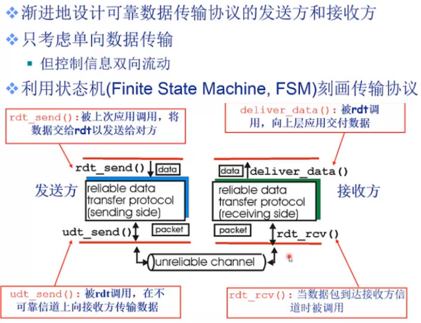 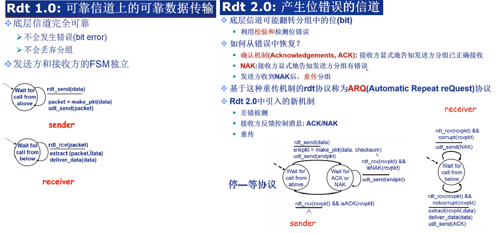 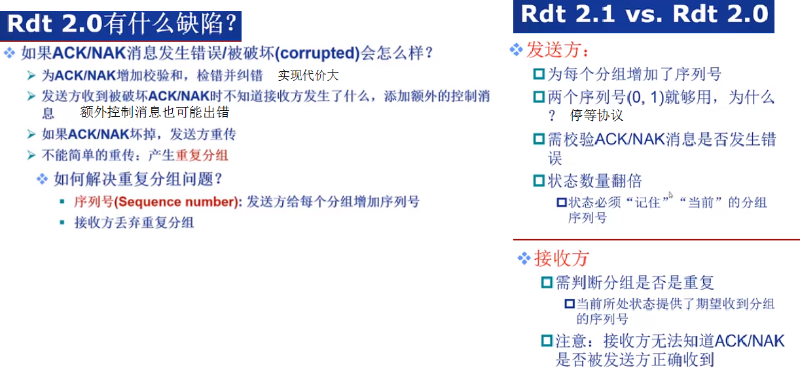 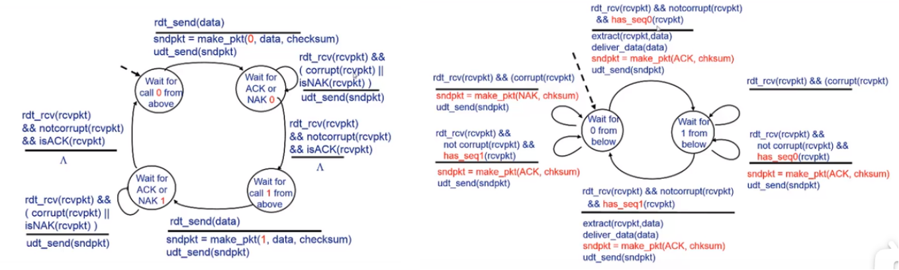 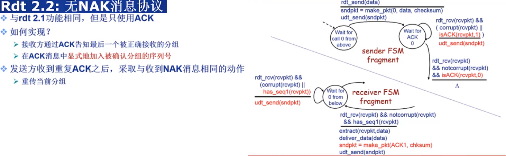 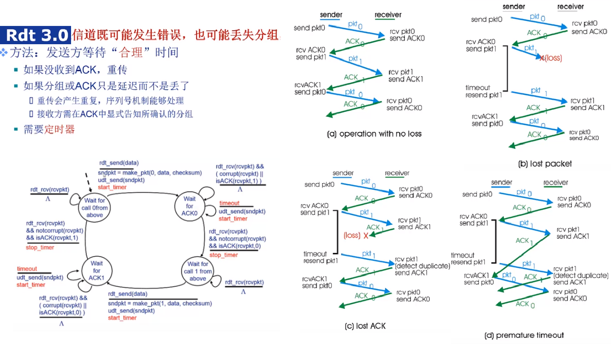 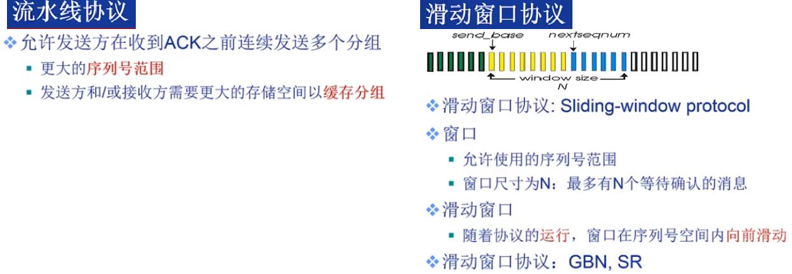 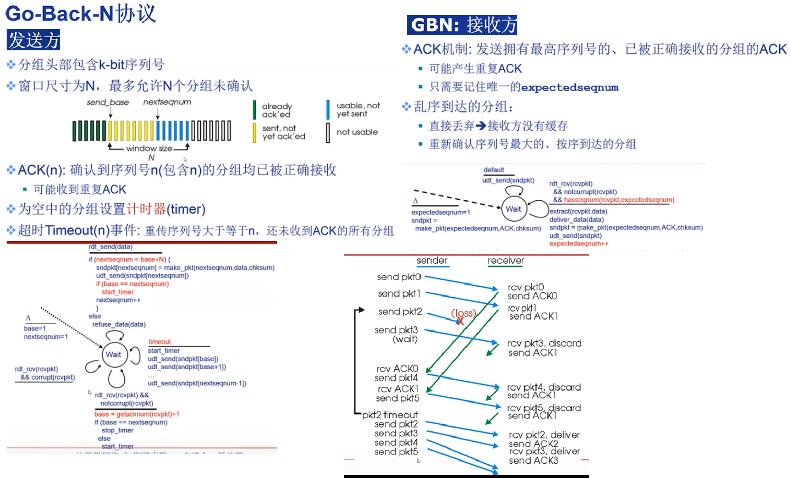 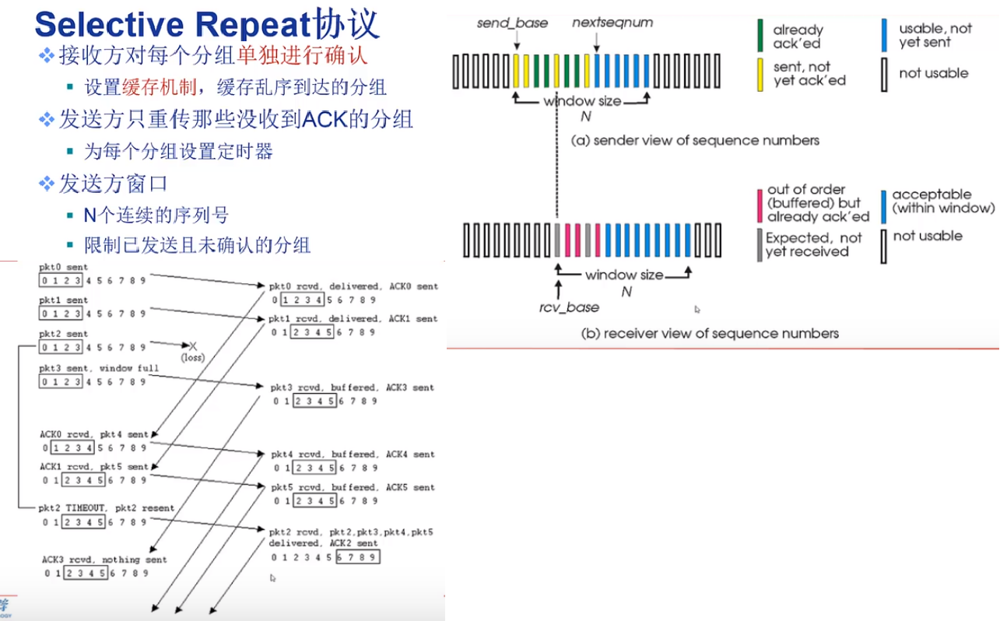
TCP
-
MSS(Maximum Segment Size): TCP可从发送缓存中取出并放入报文段中的最大数据量;
MTU(Maximum Transmission Unit): 最大链路帧长度 考虑到以太网和PPP链路层协议都具有1500字节的MTU，而TCP数据段header一般为20字节，再有IP数据报的header也为20字节， 因此MSS的典型值为1460字节。 -
TCP数据段
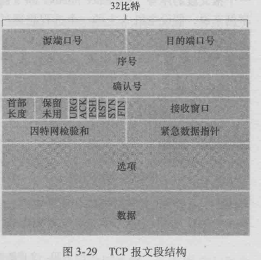
序列号和确认号用来实现可靠数据传输服务；其中序列号是报文段首字节的字节流编号，接收方根据序列号可以去除重复数据，保证按序接收数据包；发送方则可以用来标识发送出去的数据包哪些是被正确接收了；确认号是接收方期望接收的下一字节的序号，用来解决丢包的问题。
6 bit的标志位: ACK位用来指示确认号是有效的，即对一个已被成功接收报文段的确认(TCP规定除了最初请求建立连接时的SYN报文段之外该位必须设置为1)；RST(表示TCP连接中出现异常必须强制断开连接)、FIN(表示不会再有数据发送，希望断开连接)、SYN(希望建立连接)用于连接建立和删除； PSH指示接收方应立刻将数据交给上层；URG指示报文段存在被发送端上层应用标记为紧急的数据。(实践中，PSH、URG以及紧急数据指针并没有使用) -
TCP可靠数据传输
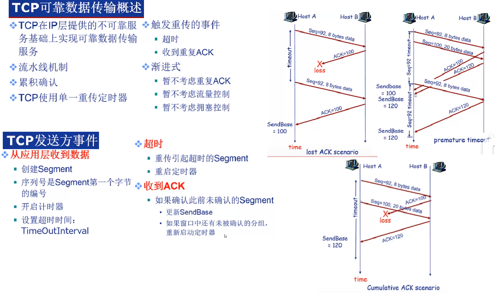
流水线机制: 准确来说是滑动窗口机制，发送方在发送一个网络包后，不等待ACK号返回，而是直接发送后续一系列的包；当接收方收到网络包后，会先将数据存放到接收缓冲区中。然后，接收方计算ACK号和剩余接收缓存区大小RecvWindow，返回给发送方，发送方根据RecvWindow大小对数据发送操作进行控制，这就是滑动窗口方式的基本思路。
RecvWindow更新时机发生在接收方上层应用层从接收缓存区中取出数据后，导致缓存区剩余容量增加时，接收方会更新窗口大小。
接收方在发送ACK号和窗口更新时，并不会马上把包发送出去，而是会等待一段时间，在这个过程中很有可能会出现其他的通知操作，这样就可以把两种通知合并在一个包里面发送了。例如，在等待发送ACK号的时候正好需要更新窗口，这时就可以把ACK号和窗口更新放在一个包里发送，从而减少包的数量。当需要连续发送多个ACK号时，也可以减少包的数量，这是因为ACK号表示的是已收到的数据量，也就是说，它是告诉发送方目前已接收的数据的最后位置在哪里，因此当需要连续发送ACK号时，只要发送最后一个ACK号就可以了，中间的可以全部省略。当需要连续发送多个窗口更新时也可以减少包的数量，因为连续发生窗口更新说明应用程序连续请求了数据，接收缓冲区的剩余空间连续增加。这种情况和ACK号一样，可以省略中间过程，只要发送最终的结果就可以了。
超时重传: TCP协议要求在发送端每发送一个报文段，就启动一个定时器并等待确认信息；接收端成功接收新数据后返回确认信息。若在定时器超时前数据未能被确认，TCP就认为报文段中的数据已丢失或损坏，需要对报文段中的数据重新组织和重传。
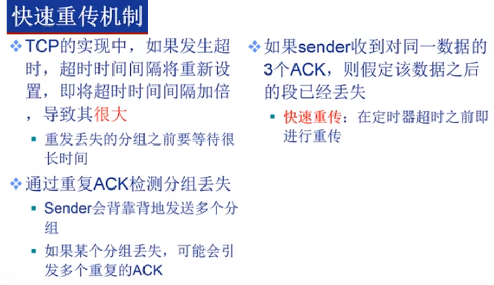
TCP采用的是累计确认机制，当发送方接收到3个冗余ACK(假设ACK号为K)时，意味着序列号为K的数据包可能已经丢失，TCP就会执行快速重传从序列号K开始的数据包。
- TCP流量控制
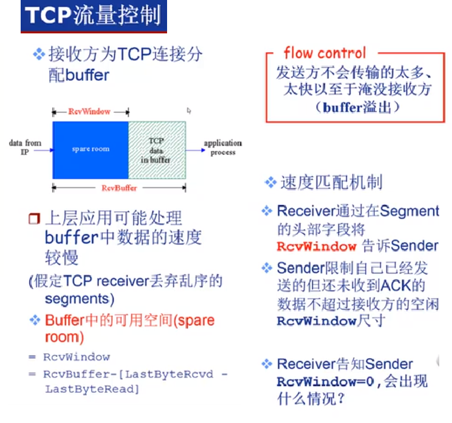
1.1 什么是流量控制？流量控制的目的？ 如果发送者发送数据过快，接收者来不及接收，那么就会有分组丢失。为了避免分组丢失， 控制发送者的发送速度，使得接收者来得及接收，这就是流量控制。 流量控制根本目的是防止分组丢失，它是构成TCP可靠性的一方面。
1.2 如何实现流量控制？ 主要的方式就是接收方返回的数据段中会包含自己的接收窗口的大小， 并且利用大小来控制发送方的数据发送。
1.3 流量控制引发的死锁？怎么避免死锁的发生？ 当发送者收到了一个窗口为0的应答，发送者便停止发送，等待接收者的下一个应答。 但是如果这个窗口不为0的应答在传输过程丢失，发送者一直等待下去，而接收者以为发送者已经收到该应答， 等待接收新数据，这样双方就相互等待，从而产生死锁。 为了避免流量控制引发的死锁，TCP使用了持续计时器。每当发送者收到一个零窗口的应答后就启动该计时器。 时间一到便主动发送报文询问接收者的窗口大小。若接收者仍然返回零窗口，则重置该计时器继续等待； 若窗口不为0，此时重置发送窗口后开始发送，这样就避免了死锁的产生。 -
三次握手和四次挥手
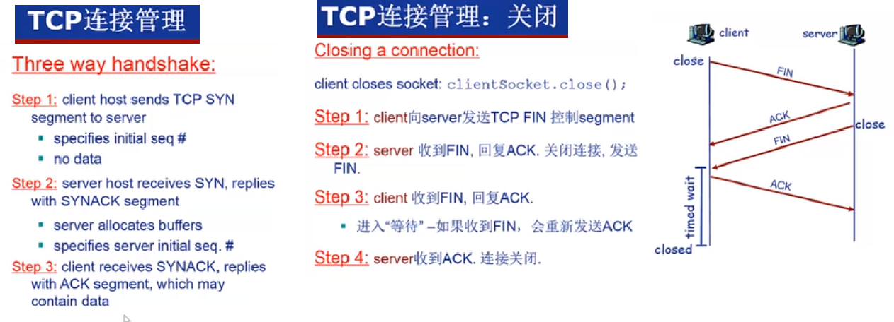
三次握手:
第一步：客户端TCP向服务端TCP发送一个特殊报文段，表示希望建立连接，该报文段不包含应用层数据，随机初始化序号字段 标志位中的SYN被置为1，被称为SYN报文段。
第二步：服务端接收到客户端发送的SYN报文，为该TCP连接分配TCP缓存和变量， 并向客户端TCP发送允许连接的TCP报文段，该报文段随机初始化序号字段，确认号字段为收到的客户端序号值+1， SYN标志位和ACK标志位被置1，该报文段被称为SYNACK报文段。
第三步：在收到SYNACK报文段后，客户端也要给连接分配缓存和变量，然后向服务器发送应答报文， 该报文ACK标志位置1，SYN标志位置0，确认号字段为收到的服务端序号值+1，然后将报文发送给服务端。 此次报文可以携带客户到服务器的数据。
为什么要三次握手: 首要原因，为了防止已失效的连接请求报文段在网络延迟后又到达了服务端，产生错误连接。 client发出连接请求，但因连接请求报文未被server接收(可能丢失或者延迟)，因此没有收到确认。 于是A再重传一次请求连接。后来收到了确认，建立了连接。数据传输完毕后，就释放了连接。 但第一次发送的请求连接报文在连接释放后也到达server，虽然这是一个早已失效的报文段。 但server收到此失效的连接请求报文段后，误认为是client再次发出的一个新的连接请求。 于是就向client发出确认报文段，同意建立连接。假设不采用“三次握手”，那么只要server发出确认， 新的连接就建立了。由于现在client并没有发出建立连接的请求，不会向server发送数据。 但server一直等待client发来数据。这样，server将浪费许多资源在等待。 如果是三次握手，客户端则可以发送RST报文给服务端，中止此次连接。 第二个原因，是为了同步双方初始序列号，两次握手虽然让双方就发送端的序列号达成同步， 但TCP连接是双向的，因此也需要就服务端的序列号达成同步； 但此时无法确保client收到server返回的确认报文，因此双方无法就服务端序列号达成同步。
四次握手也可以实现目的，但由于三次握手即可实现需求，所以无需额外的确认。四次挥手: 1、客户端打算关闭连接，会发送一个特殊报文，该TCP报文段的FIN标志位置1； 2、服务端接收到FIN报文，会向客户端发送ACK应答报文；客户端接收到ACK报文，便不会再重发FIN报文 3、服务端处理完数据后，向客户端发送FIN报文； 4、客户端接收到服务端的FIN报文后，也会回复一个ACK报文，然后进入TIME_WAIT状态。 5、服务器收到ACK报文后，就进入close状态，完成连接的关闭。 客户端在等待2MSL后，自动进入close状态，客户端也完成连接的关闭。
为什么需要四次挥手 服务端通常需要等待完成数据的发送和处理，因此服务端的ACK和FIN报文是分开发送的， 从而比三次握手多一次。
MSL：maximum segment lifetime, 报文最大生存时间
为什么需要TIME_WAIT状态： 1、确保主动关闭方发送的ACK应答报文被正确接收:通常只有主动关闭方才会进入TIME_WAIT状态， 假如客户端是主动关闭方，而客户端在接受到服务端的FIN报文后，向服务端发送ACK报文后，直接进入close状态， 删除套接字；而该ACK报文丢失，服务端在等待超时后，就会重发FIN报文； 当服务端重发的FIN报文到达客户端时，客户端会认为其是一个非法报文段，于是返回一个RST报文， 表示连接异常，则服务器端套接字不能进入正常的关闭状态。
2、确保历史连接过程的数据包在网络中过期而消失: 在第四次挥手后，经过2msl的时间足以让本次连接产生的所有报文段都从网络中消失， 这样下一次新的连接中就肯定不会出现旧连接的报文段了; 没有time-wait, 如果此时客户端和服务端又建立了新的TCP连接，且和历史连接采用了相同的端口， 而历史连接的数据包可能在延迟后到达接收端，会被当成此次连接中的数据包而正常接收，从而造成数据错乱。 -
SYN cookie
SYN Cookie是对TCP服务器端的三次握手协议作一些修改，专门用来防范SYN Flood攻击的一种手段。它的原理是，在TCP服务器收到发送方SYN数据包并返回SYNACK数据包时，不会先为该TCP连接分配缓存，而是根据这个SYN数据包计算出一个cookie值。在收到发送方返回的ACK数据包时，服务器根据cookie值检查这个ACK数据包的合法性。如果合法，再分配专门的数据区进行处理未来的TCP连接。 -
TCP拥塞控制
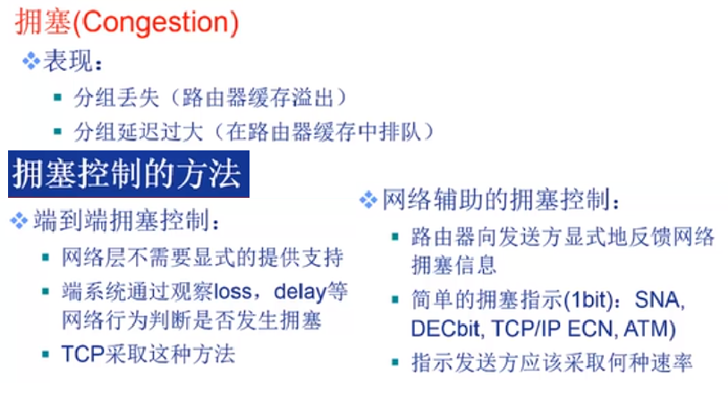 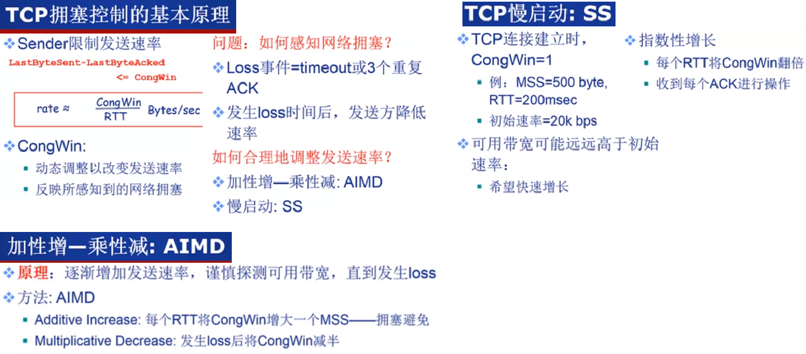 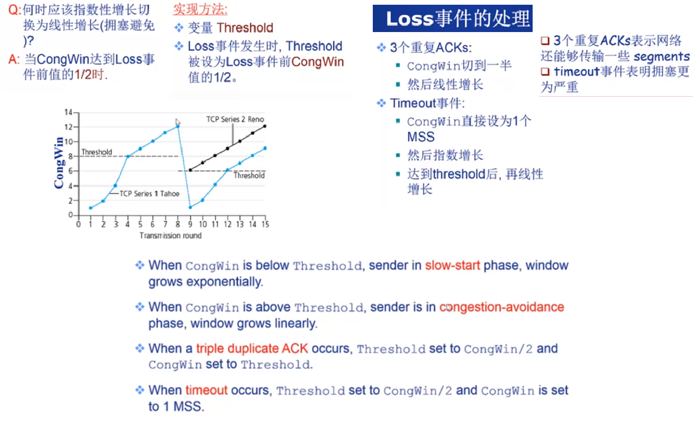 -
流量控制与拥塞控制
拥塞控制：拥塞控制是作用于网络的，它是防止过多的数据注入到网络中，避免出现网络负载过大的情况；
常用的方法就是：（ 1 ）慢开始、拥塞避免（ 2 ）快重传、快恢复。
流量控制：流量控制是作用于接收者的，它是控制发送者的发送速度从而使接收者来得及接收，防止分组丢失。
TCP与UDP不同
- 连接
TCP 是面向连接的传输层协议，传输数据前先要建立连接。 UDP 是不需要连接，即刻传输数据。 - 服务对象
TCP 是一对一的两点服务，即一条连接只有两个端点。 UDP 支持一对一、一对多、多对多的交互通信 - 可靠性
TCP 是可靠交付数据的，数据可以无差错、不丢失、不重复、按需到达。 UDP 是尽最大努力交付，不保证可靠交付数据。 - 拥塞控制、流量控制
TCP 有拥塞控制和流量控制机制，保证数据传输的安全性。 UDP 则没有，即使网络非常拥堵了，也不会影响 UDP 的发送速率。 - 首部开销
TCP 首部长度较长，会有一定的开销，首部在没有使用「选项」字段时是 20 个字节，如果使用了「选项」字段则会变长的。 UDP 首部只有 8 个字节，并且是固定不变的，开销较小。 - TCP是面向字节流的，其将应用层传递的数据看成无结构的字节流，TCP有一个缓冲，当应用程序传送的数据块太长，TCP就可以把它划分短一些再传送。如果应用程序一次只发送一个字节，TCP也可以等待积累有足够多的字节后再构成报文段发送出去。并且根据当前网络的拥塞程度来决定每个报文段大小；
UDP是面向数据包的：发送方的UDP对应用层交下来的报文，不合并，不拆分，只是在其上面加上首部后就交给了下面的网络层；对于过长的报文段，在网络层，会针对IP数据报进行分片。